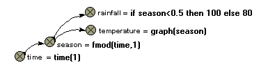

fmod(X,Y)
Returns
remainder after dividing X by Y
Inputs: numeric,
numeric
Result: numeric
Examples:
fmod(7,3)
--> 0.333 (7/2 = 2.333, i.e. the remainder is 0.333)
fmod(time(1),1) --> a result that climbs from 0 to 1 repeatedly (i.e. a
sawtooth pattern) as the simulation proceeds.
See comments below.
fmod((index(1)-1),5)+1 --> 1,2,3,4,5,1,2,3,4,5,1,2,3... for successive
values of index(1). See comments below.
Comments
This
apparently obscure function in fact has (at least) two very valuable uses.
First, it
can be used to generate regular cycles, in particular annual or daily
cycles. Consider the case or a model
with the time unit being one year, and a time step of less than a year. You want various exogenous variables (such as
temperature or rainfall) to vary in a prescribed fashion during the course of
each year, with the annual pattern repeating itself from one year to the
next. The following diagram is typical
of the model fragment you could use for representing this:

The
variable time is simply set equal to current simulation time, using the
function time(1). The variable season is
set to rise from 0 to 1 every year. If
your model used a time unit of one week, then the equation would be changed to
season = fmod(time,52)
and the value for
season would then correspond to week number.
The equations for rainfall and temperature are for illustration purposes
only: you would need to replace them by something appropriate.
Second, the
fmod function can be used to generate a regular spatial arrangement (rows and
columns) for a 2D grid. Let's say that
you are modelling an area of 10x10 grid squares. In Simile, you would set up a submodel,
called perhaps Patch, with 25 instances.
In order to give each patch location on a grid, each one needs to have a
row and column attributes, with each patch having a unique combination of the
numbers 1..5 for row and column. The
only thing we know about each patch is that it has an index number (given by
the built-in function index(1)), a value ranging between 1 and 25. The trick is to get row number to be, in
sequence,
1,1,1,1,1,2,2,2,2,2,3,3,3...
and column number to
be, in sequence,
1,2,3,4,5,1,2,3,4,5,1,2,3...
thus giving each of the
25 instances a unique row-and-column pair.
This is
readily done using the following two equations:
row = floor((index(1)-1)/5)+1
column = fmod((index(1)-1),5)+1
See the
floor function to understand why the row numbers should be in the first
sequence above. For column, we divide
the index number for each instance by 5, taking the remainder: the '-1' and +1'
are there to ensure that we get the results in the blocks of five that we
require. See a grid-based spatial model
example to see this in action.
In: Contents >> Working with equations >> Functions >> Built-in functions